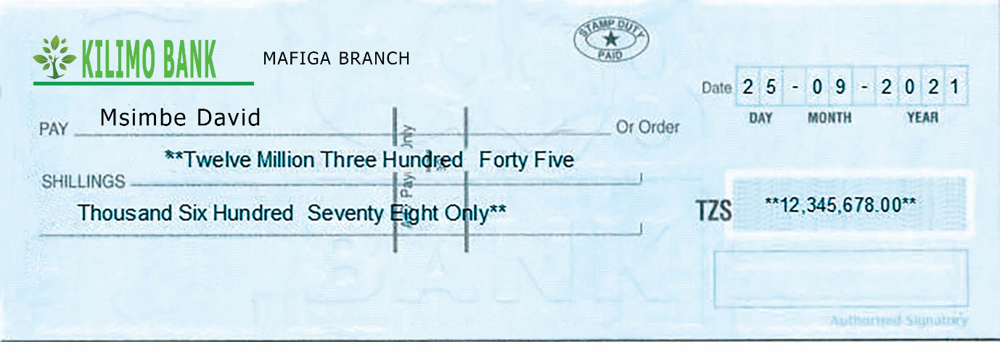
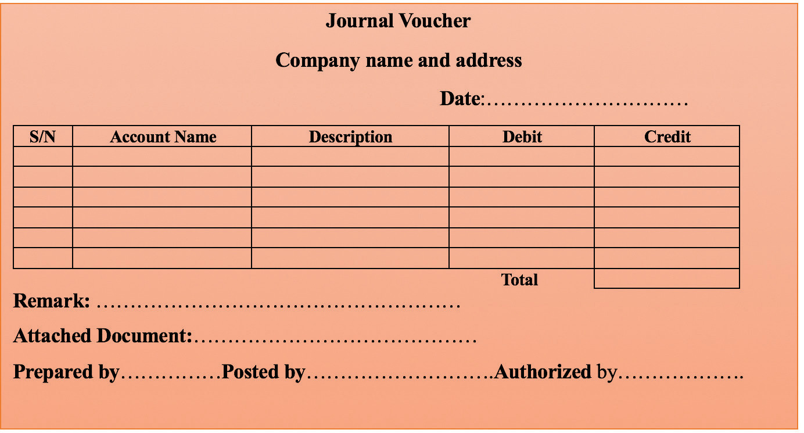

Cheques have gained popularity in the business world because of being safe, secure and convenient compared to cash payments. Figure 4.8 shows a sample of a cheque.


Activity 4.8
Prepare a sample of cheque and demonstrate how to fill it out.
Journal voucher
A journal voucher is a source document used to provide evidence of authorisation for all transactions other than those which are evidenced by the previously mentioned source documents. These transactions include accounting adjustments, provisions and accruals, purchases and sales of non-current assets, and opening entries. Entries from the journal voucher are directly transferred to the general journal. Figure 4.9 shows a sample of a journal voucher.
Authorised
